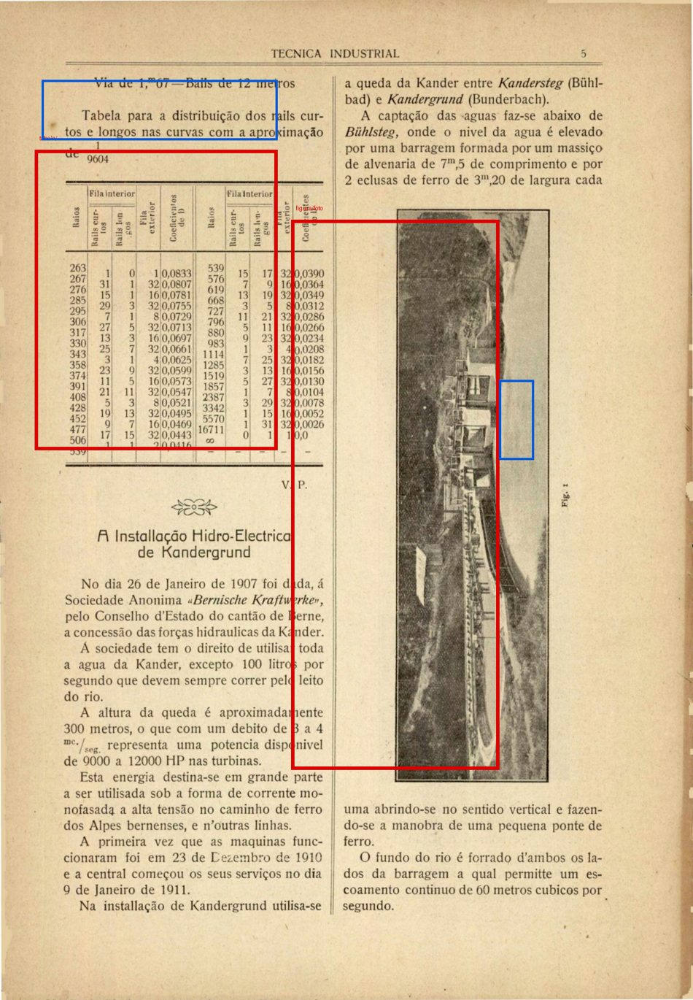
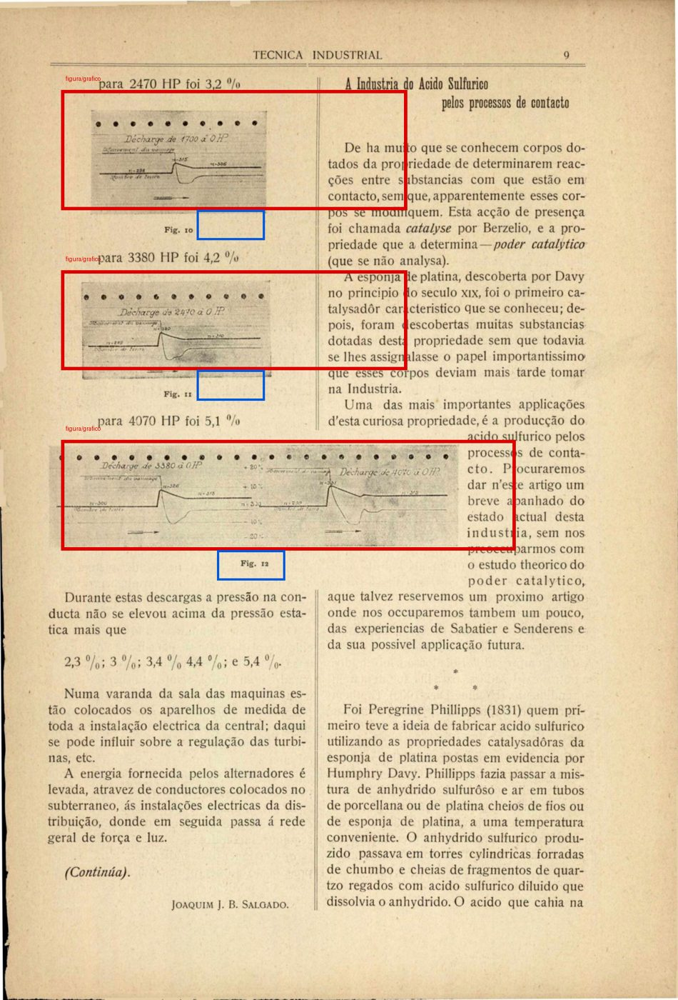
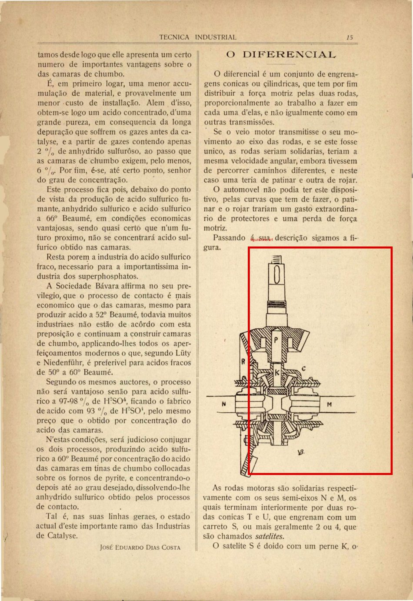
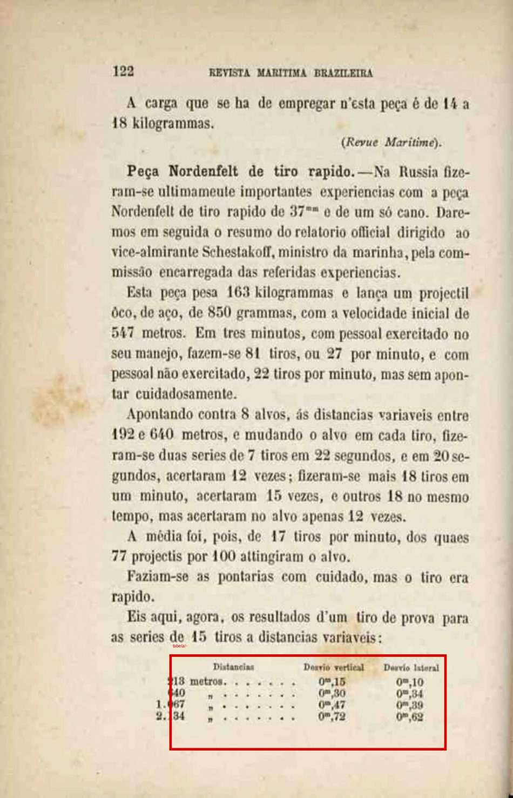

Caixa vermelha = figura/tabela proposta. Caixa azul = legenda. Renderizado a 200 DPI, o mesmo do pipeline de produção.
Estas caixas são proposta minha, não validadas. Corrija o que estiver errado
que eu atualizo anotacoes.json.
Técnica Industrial, ano 1 n.1 (1915) — página 6 do item no Internet Archive · página 432.0×622.47 pt (1200×1729 px a 200 DPI) · versionável
| # | tipo | caixa (pt) | legenda (pt) | nota |
|---|---|---|---|---|
| 0 | tabela/- | [21.6, 93.4, 172.8, 280.1] | [25.9, 49.8, 172.8, 87.1] | tabela de distribuicao de rails, com fios; titulo acima serve de legenda |
| 1 | figura/foto | [181.4, 136.9, 311.0, 479.3] | [311.0, 236.5, 332.6, 286.3] | foto meio-tom vertical da obra; rotulo 'Fig. 1' impresso rotacionado a direita |

Técnica Industrial, ano 1 n.1 (1915) — página 10 do item no Internet Archive · página 432.0×636.81 pt (1200×1769 px a 200 DPI) · versionável
| # | tipo | caixa (pt) | legenda (pt) | nota |
|---|---|---|---|---|
| 0 | figura/grafico | [38.9, 57.3, 259.2, 133.7] | [125.3, 133.7, 168.5, 152.8] | grafico de linha 'para 2470 HP foi 3,2%', rotulos horizontais; legenda 'Fig. 10' |
| 1 | figura/grafico | [38.9, 171.9, 259.2, 235.6] | [125.3, 235.6, 168.5, 254.7] | grafico de linha 'para 3380 HP foi 4,2%'; legenda 'Fig. 11' |
| 2 | figura/grafico | [38.9, 280.2, 328.3, 350.2] | [138.2, 350.2, 181.4, 369.3] | par de graficos de linha 'para 4070 HP foi 5,1%'; legenda 'Fig. 12' |

Técnica Industrial, ano 1 n.1 (1915) — página 16 do item no Internet Archive · página 432.0×628.56 pt (1200×1746 px a 200 DPI) · versionável
| # | tipo | caixa (pt) | legenda (pt) | nota |
|---|---|---|---|---|
| 0 | figura/line-art | [259.2, 257.7, 410.4, 496.6] | — | corte de diferencial automotivo em traco, sem legenda impressa |

Os portos marítimos de Portugal, vol. 2 — página 95 do item no Internet Archive · página 432.0×761.04 pt (1200×2114 px a 200 DPI) · NÃO versionável (licença indefinida)
| # | tipo | caixa (pt) | legenda (pt) | nota |
|---|---|---|---|---|
| 0 | tabela/- | [51.8, 152.2, 380.2, 441.4] | [60.5, 106.5, 371.5, 144.6] | mappa de rendimentos aduaneiros, com fios; titulo acima |

Os portos marítimos de Portugal, vol. 2 — página 106 do item no Internet Archive · página 432.0×761.04 pt (1200×2114 px a 200 DPI) · NÃO versionável (licença indefinida)
| # | tipo | caixa (pt) | legenda (pt) | nota |
|---|---|---|---|---|
| 0 | tabela/- | [51.8, 137.0, 380.2, 319.6] | [77.8, 76.1, 354.2, 121.8] | mappa de inclinacoes superficiaes, com fios; titulo acima |

Os portos marítimos de Portugal, vol. 2 — página 232 do item no Internet Archive · página 432.0×761.04 pt (1200×2114 px a 200 DPI) · NÃO versionável (licença indefinida)
| # | tipo | caixa (pt) | legenda (pt) | nota |
|---|---|---|---|---|
| 0 | tabela/- | [56.2, 144.6, 380.2, 411.0] | [73.4, 91.3, 362.9, 129.4] | mappa de navios entrados, com fios; titulo acima |

Tractado de clínica propedêutica — página 156 do item no Internet Archive · página 432.0×673.63 pt (1200×1871 px a 200 DPI) · NÃO versionável (licença indefinida)
| # | tipo | caixa (pt) | legenda (pt) | nota |
|---|---|---|---|---|
| 0 | figura/line-art | [51.8, 141.5, 388.8, 417.7] | [43.2, 424.4, 388.8, 498.5] | diagrama anatomico do torax em traco; bloco de chave em corpo menor abaixo |

Tractado de clínica propedêutica — página 282 do item no Internet Archive · página 432.0×673.63 pt (1200×1871 px a 200 DPI) · NÃO versionável (licença indefinida)
| # | tipo | caixa (pt) | legenda (pt) | nota |
|---|---|---|---|---|
| 0 | figura/line-art | [129.6, 134.7, 337.0, 384.0] | [121.0, 390.7, 337.0, 410.9] | diagrama cardiometrico em traco; legenda 'PROCESSO CARDIOMETRICO DE C. PAUL' |

Tractado de clínica propedêutica — página 440 do item no Internet Archive · página 432.0×673.63 pt (1200×1871 px a 200 DPI) · NÃO versionável (licença indefinida)
| # | tipo | caixa (pt) | legenda (pt) | nota |
|---|---|---|---|---|
| 0 | figura/foto | [129.6, 296.4, 345.6, 384.0] | [164.2, 390.7, 311.0, 410.9] | esphygmogramma: faixa de fundo preto solido, meio-tom real; legenda abaixo |

Viagem ao redor do Brasil — Esboço chorographico da província de Matto-Grosso — página 32 do item no Internet Archive · página 432.0×687.47 pt (1200×1910 px a 200 DPI) · NÃO versionável (licença indefinida)
| # | tipo | caixa (pt) | legenda (pt) | nota |
|---|---|---|---|---|
| 0 | figura/foto | [60.5, 206.2, 388.8, 378.1] | [181.4, 385.0, 272.2, 405.6] | gravura de paisagem entre dois blocos de texto; legenda 'O Planalto' |

Viagem ao redor do Brasil — Esboço chorographico da província de Matto-Grosso — página 35 do item no Internet Archive · página 432.0×687.47 pt (1200×1910 px a 200 DPI) · NÃO versionável (licença indefinida)
| # | tipo | caixa (pt) | legenda (pt) | nota |
|---|---|---|---|---|
| 0 | figura/foto | [108.0, 364.4, 345.6, 529.4] | [194.4, 550.0, 280.8, 570.6] | gravura 'Os Itambes', texto acima e nota de rodape abaixo |

Viagem ao redor do Brasil — Esboço chorographico da província de Matto-Grosso — página 47 do item no Internet Archive · página 432.0×687.47 pt (1200×1910 px a 200 DPI) · NÃO versionável (licença indefinida)
| # | tipo | caixa (pt) | legenda (pt) | nota |
|---|---|---|---|---|
| 0 | figura/foto | [60.5, 171.9, 388.8, 357.5] | [129.6, 364.4, 337.0, 412.5] | gravura no alto da pagina; legenda em duas linhas |

Revista Marítima Brasileira, vol. 7 (julho 1884) — página 116 do item no Internet Archive · página 432.0×671.62 pt (1200×1866 px a 200 DPI) · versionável
| # | tipo | caixa (pt) | legenda (pt) | nota |
|---|---|---|---|---|
| 0 | tabela/- | [142.6, 550.7, 375.8, 631.3] | — | tabela SEM FIOS (so colunas alinhadas) no pe da pagina — caso dificil deliberado |
